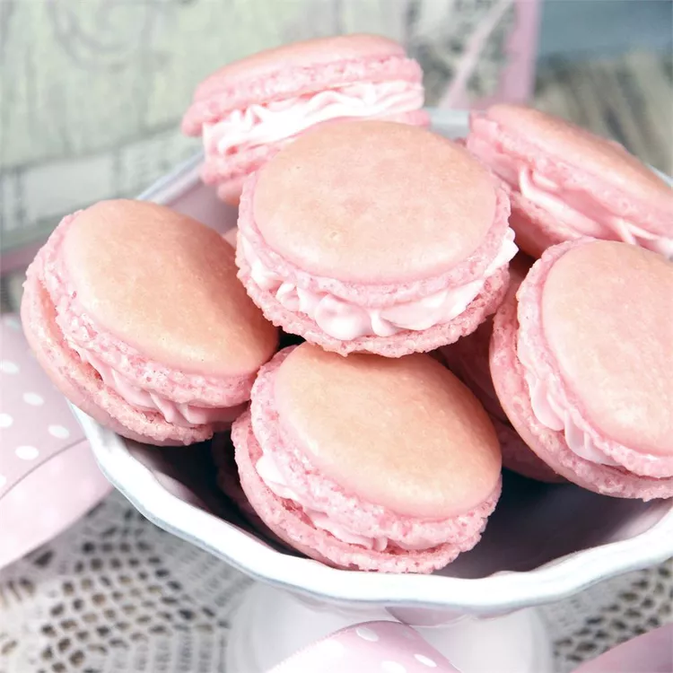

MACARONS



Description
Macarons are dainty sandwich cookies made with almond flour and meringue and filled with jam, buttercream, or ganache. Not to be confused with coconut macaroons. They're tricky to make, with even the pros claiming failure on a regular basis. After going through dozens of recipes and trials, this is the most reliable homemade macaron recipe I could come up with.
Ingredients for Fifteen Servings
- 4 extra large egg whites
- 1 ⅔ cups confectioners' sugar
- 1 ⅓ cups almond flour
- ⅛ teaspoon salt
- ¼ cup superfine (castor) sugar
- ¼ cup seedless raspberry jam
Steps
- Place egg whites into a metal mixing bowl and refrigerate overnight. The next day, bring egg whites to room temperature.
- Preheat the oven to 280 degrees F (138 degrees C). Line two baking sheets with parchment paper.
- Whisk confectioners' sugar and almond flour together in a bowl.
- Beat egg whites with salt in a metal bowl with an electric mixer on medium speed until foamy, about 1 minute. Increase speed to high and gradually beat in superfine sugar, about 1 tablespoon at a time, until egg whites are glossy and hold stiff peaks, 3 to 5 more minutes.
- Gently fold almond flour mixture into whipped egg whites until thoroughly incorporated; spoon meringue into a pastry bag fitted with a 3/8-inch tip. Pipe 1-inch disks of meringue onto the prepared baking sheets, leaving 2 inches of space between macarons. The batter will spread.
- Lift the baking sheets a few inches above the work surface and hit them lightly on the work surface several times to remove any air bubbles from the macarons; let stand at room temperature until the shiny surfaces become dull and a thin skin forms, about 25 to 30 minutes.
- Place the baking sheets in the preheated oven and bake until macarons surfaces are completely dry, about 19 to 20 minutes. Let macarons cool completely on the baking sheets before peeling parchment paper off.
- Spread half of the macaron cookies with any desired filling; top with remaining macarons to make sandwich cookies, and refrigerate at least 2 hours to overnight to let them soften.